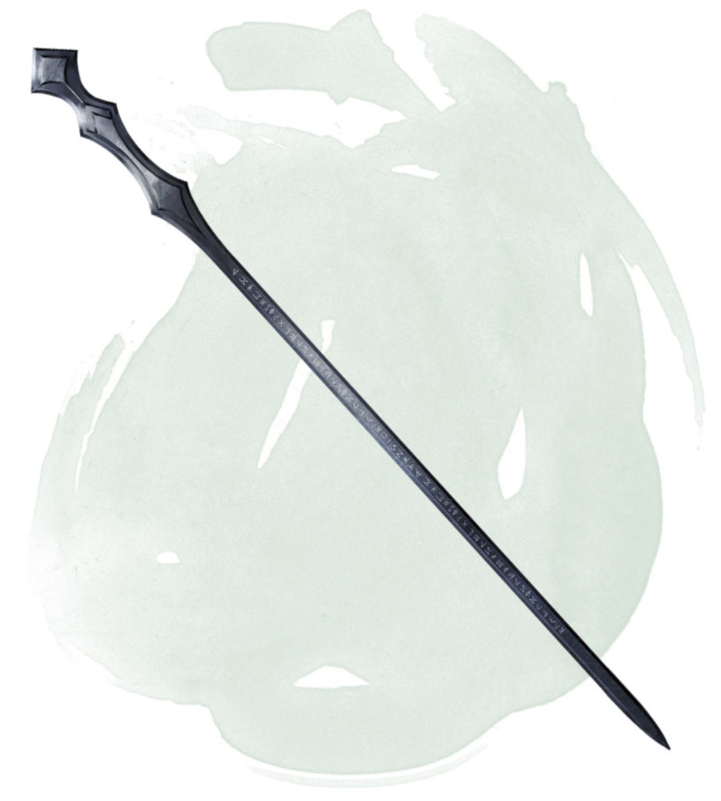

Bâton de surpuissance
[ Staff of Power ]
Bâton, très rare (nécessite un lien avec un ensorceleur, un magicien ou un occultiste)
Ce bâton peut être utilisé comme un bâton (arme) magique conférant un bonus de +2 aux jets d'attaque et de dégâts effectués avec lui. Tant que vous le tenez, vous gagnez un bonus de +2 à la Classe d'Armure, aux jets de sauvegarde, et aux jets d'attaque avec un sort.
Le bâton possède 20 charges pour les propriétés suivantes. Le bâton récupère 2d8 + 4 charges dépensées chaque jour à l'aube. Si vous dépensez la dernière charge, lancez un d20. Sur un résultat de 1, le bâton conserve son bonus de +2 aux jets d'attaque et de dégâts mais perd toutes ses autres propriétés. Sur un résultat de 20, le bâton récupère 1d8 + 2 charges.
Frappe surpuissante. Lorsque vous touchez lors d'une attaque au corps à corps en utilisant le bâton, vous pouvez dépenser 1 charge pour infliger 1d6 dégâts de force supplémentaires à la cible.
Sorts. Tant que vous tenez ce bâton, vous pouvez utiliser une action pour dépenser 1 ou plus de ses charges afin de lancer l'un des sorts suivants depuis le bâton, vous utilisez votre propre DD au jet de sauvegarde des sorts et votre bonus d'attaque avec un sort : cône de froid (5 charges), boule de feu (emplacement de sort niveau 5, 5 charges), globe d'invulnérabilité (6 charges), immobilisation de monstre (5 charges), lévitation (2 charges), éclair (emplacement de sort niveau 5, 5 charges), projectile magique (1 charge), rayon affaiblissant (1 charge) ou mur de force (5 charges).
Frappe vengeresse. Vous pouvez utiliser une action pour briser le bâton contre votre genou ou contre une surface solide, déclenchant alors la frappe vengeresse. Le bâton est détruit et libère la magie qui lui reste en une formidable explosion qui recouvre une zone sphérique de 9 mètres de rayons centrée sur lui.
Vous avez 50 % de chance de voyager instantanément vers un plan d'existence aléatoire, échappant alors à l'explosion. Si vous ne parvenez pas à éviter l'effet, vous subissez un montant de dégâts de force égal à 16 x le nombre de charges dans le bâton. Toutes les autres créatures dans la zone doivent effectuer un jet de sauvegarde de Dextérité DD 17. En cas d'échec au jet de sauvegarde, une créature subit un montant de dégâts basé sur la distance entre elle et l'épicentre de l'explosion, comme indiqué sur la table ci-dessous. En cas de jet de sauvegarde réussi, une créature ne subit que la moitié des dégâts prévus.
Le bâton possède 20 charges pour les propriétés suivantes. Le bâton récupère 2d8 + 4 charges dépensées chaque jour à l'aube. Si vous dépensez la dernière charge, lancez un d20. Sur un résultat de 1, le bâton conserve son bonus de +2 aux jets d'attaque et de dégâts mais perd toutes ses autres propriétés. Sur un résultat de 20, le bâton récupère 1d8 + 2 charges.
Frappe surpuissante. Lorsque vous touchez lors d'une attaque au corps à corps en utilisant le bâton, vous pouvez dépenser 1 charge pour infliger 1d6 dégâts de force supplémentaires à la cible.
Sorts. Tant que vous tenez ce bâton, vous pouvez utiliser une action pour dépenser 1 ou plus de ses charges afin de lancer l'un des sorts suivants depuis le bâton, vous utilisez votre propre DD au jet de sauvegarde des sorts et votre bonus d'attaque avec un sort : cône de froid (5 charges), boule de feu (emplacement de sort niveau 5, 5 charges), globe d'invulnérabilité (6 charges), immobilisation de monstre (5 charges), lévitation (2 charges), éclair (emplacement de sort niveau 5, 5 charges), projectile magique (1 charge), rayon affaiblissant (1 charge) ou mur de force (5 charges).
Frappe vengeresse. Vous pouvez utiliser une action pour briser le bâton contre votre genou ou contre une surface solide, déclenchant alors la frappe vengeresse. Le bâton est détruit et libère la magie qui lui reste en une formidable explosion qui recouvre une zone sphérique de 9 mètres de rayons centrée sur lui.
Vous avez 50 % de chance de voyager instantanément vers un plan d'existence aléatoire, échappant alors à l'explosion. Si vous ne parvenez pas à éviter l'effet, vous subissez un montant de dégâts de force égal à 16 x le nombre de charges dans le bâton. Toutes les autres créatures dans la zone doivent effectuer un jet de sauvegarde de Dextérité DD 17. En cas d'échec au jet de sauvegarde, une créature subit un montant de dégâts basé sur la distance entre elle et l'épicentre de l'explosion, comme indiqué sur la table ci-dessous. En cas de jet de sauvegarde réussi, une créature ne subit que la moitié des dégâts prévus.
| Distance par rapport à l'origine | Dégâts |
|---|---|
| 3 m ou moins | 8 x le nombre de charges dans le bâton |
| Plus de 3 m, jusqu'à 6 m | 6 x le nombre de charges dans le bâton |
| Plus de 6 m, jusqu'à 9 m | 4 x le nombre de charges dans le bâton |
Dungeon Master´s Guide (SRD)
